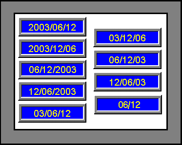
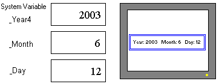

|
|
|
|
|
|
|
|
This section describes the different methods you can use to display dates:
Use the Date Display tool or Vijeo-Designer system variables to display the current system date for the target machine.
Use the Date Toolchest part to change a date.
With the Date Display tool, you can choose from a variety of display formats. The following example shows different formats used to display June 12, 2003:

For more information on how to set up a date display, see Section 11.4.1, Setting Up a Date Display.
If you want to display additional text besides the calendar dates, use Vijeo-Designer system variables. System variables are internal variables that store a variety of information such as time, date, screen ID, or error ID. You can create your own date display by using the following system variables in Numeric Display or Value animation: _Year2 (last two digits of current year), _Year4 (four digits of current year), _Month (current month), and _Day (current day).


When working with system variables, the Numeric Display part or Value-animated Text objects display the date in numeric format only. For example, they cannot display the date as: Thursday, June 12, 2003.
The following table compares the display of dates using Date Display parts and Numeric Display parts (System Variables):
|
Date |
Using Date Display Parts |
Using Numeric Display Parts (System Variables) |
|
Display Format |
Select from nine display formats. |
Format the date by combining system variables with other text. Use _Year2 (last two digits of current year), _Year4 (four digits of current year), _Month (current month), and _Day (current day) system variables in Numeric Display (Data Type: Integer). |
|
Animation |
You cannot add animation to a Date Display. |
You cannot add animation to a Numeric Display. |
You can combine the date with Color, Position, and Visibility animations if you use Value animation and system variables to display the date.
Changing the Date:
The steps required to change the date depend on the target machine and on what state runtime is in.
|
Runtime Status |
Update Procedure |
|
Running |
Create scripts to change the date. |
|
Offline (Runtime Configuration Menu is displayed) |
You can change the date from the Runtime Configuration menu. After changing the date, the Data Display and system variables (_Year2, _Year4, _Month, and _Day) display the new date when you start up Runtime. |
For information about the Runtime configuration menu, see Section 26.1, Configuration Menu.
For more information on how to set up a date display using system variables, see Section 11.4.2, Creating Your Own Date Displays.
With a Date Toolchest part, you can set the date using a calendar display or enter a date using a keypad. For example, you can use a Date Toolchest part to change the date on the PLC. For Date Toolchest parts, you must always assign variables.

You cannot use system variables with the Date Toolchest part. The purpose of the Date Toolchest part is for applications that store the date in variables.
The Date Toolchest Part is only supported on target machines that are designed with 20X20 touch areas. See Appendix 5. Hardware Specifications for a list of the targets and their supported touch areas.
You can choose from two types of Date Toolchest parts:
Date switch, which displays a calendar so you can set a date.
Date text display, which brings up a keypad so you can enter a date.
For more information on how to set up a date display using Toolchest parts, see Section 11.4.3, Setting Up a Date Toolchest Part.